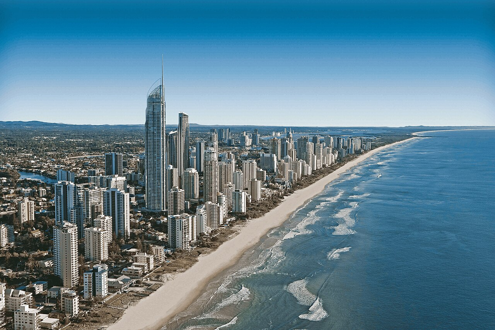
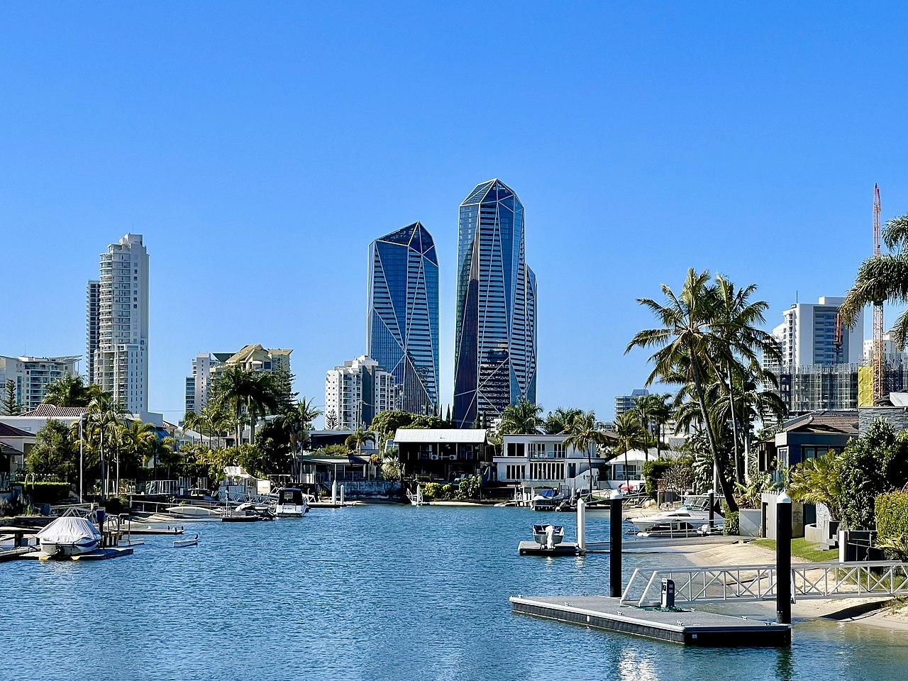
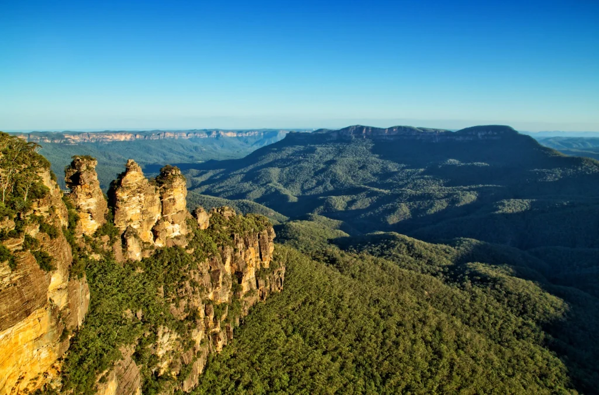

Tourism in Australia is an important part of the Australian economy, and comprises domestic and international visitors. Australia is the fortieth most visited country in the world according to the World Tourism Organization. In the financial year 2018/19, tourism was Australia's fourth-largest export and over the previous decade was growing faster than national GDP growth. At the time it represented 3.1% of Australia's GDP contributing A$60.8 billion to the national economy.
Popular Australian destinations include the coastal cities of Sydney, Brisbane and Melbourne, as well as other high-profile destinations including regional Queensland, the Gold Coast and the Great Barrier Reef, the world's largest reef. Other popular locations include Uluru, the Australian outback and the Tasmanian wilderness. The unique Australian wildlife is also another significant point of interest in the country's tourism.
Despite the global economic challenges and natural disasters in 2010–2011, Australia's tourism growth was supported by increased consumption (up 4.4% over the last few years, largely due to an increase in the number of international visitors). On the back of a strong Australian dollar, 2010–11 also saw a record 7.4 million short-term resident departures from Australia, an increase of 9.9% from 2009–10. Consumption by domestic tourists grew at less than half the pace of international tourists in 2010–11 (up 2.1% compared to 4.4%)
Tourism Australia's consumer campaign "There's Nothing Like Australia" invited Australians to share their favourite Australian place or experience with the world. The campaign is based on research conducted by Tourism Australia that showed Australians were eager to get involved in promoting their country. It was developed to involve Australians because they are the experts on what makes Australia unlike anywhere else. The core message, that "There's Nothing Like Australia" was designed for longevity through different mediums, audiences and activities.
MOST BEAUTIFUL PLACES TO VISIT IN AUSTRALIA